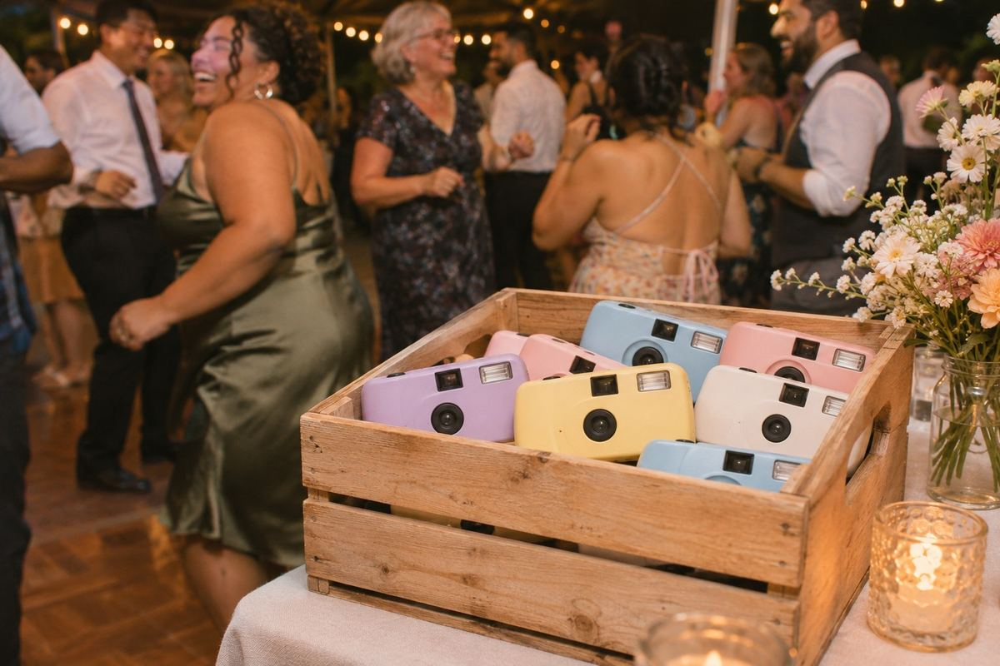

How Many Disposable Cameras Do You Need for a Wedding?
One per table is the classic rule. Here are the counts, the spares and the real costs.

Short answer: The usual rule for how many disposable cameras a wedding needs is one per table of 8 to 10 guests, plus 10 to 15 percent spares. That’s about 12 cameras for 100 guests and 29 for 250. Each holds 27 exposures, and with developing and scans, budget roughly $27 to $36 per camera as of November 2026. For lots of photos, use one per 4 to 6 guests.
Working out how many disposable cameras for a wedding comes down to three numbers: your tables, your spares and how many photos you want back. Below is a chart for 50 to 250 guests with real costs and an honest estimate of usable photos, then the logistics that decide whether the cameras come back at all. Still deciding whether to use film in the first place? Start with our breakdown of whether disposable cameras at weddings are worth it.
How many disposable cameras for a wedding, by guest count
This chart assumes round tables of 10, one camera per table and 15 percent spares, rounded up. The cost range runs from a budget setup to a typical one, using prices as of November 2026:
- Budget, about $27 a camera: Fujifilm QuickSnaps at $14.94 each in a two-pack sold by Walmart, developed with standard scans at Dwayne’s Photo for $11.50, plus a handling charge of $5 for the first camera and $0.50 for each extra.
- Typical, about $36 a camera: Kodak FunSavers at $18.81 each in a 10-pack on Walmart.com, developed with standard scans at The Darkroom for $17.
| Guests | Cameras (tables + spares) | Exposures | Est. cost with developing | Est. usable photos |
|---|---|---|---|---|
| 50 | 6 (5 + 1) | 162 | $166 to $215 | About 85 to 95 |
| 100 | 12 (10 + 2) | 324 | $328 to $430 | About 170 to 195 |
| 150 | 18 (15 + 3) | 486 | $489 to $645 | About 260 to 290 |
| 200 | 23 (20 + 3) | 621 | $624 to $824 | About 330 to 375 |
| 250 | 29 (25 + 4) | 783 | $786 to $1,038 | About 415 to 470 |
Read the last column as an estimate, not a statistic. It assumes 1 or 2 cameras in every 10 never come back and about a third of the remaining frames miss: too dark, blurred, or a thumb over the lens. The costs assume every camera gets developed, and they leave out prints and postage. They’re priced per camera, so buying whole two-packs or 10-packs can leave you with a few extras. The cheaper lab is also the slower one; our disposable camera cost breakdown compares turnaround times.
How many disposable cameras per table?
One per table is the classic answer, and it’s the one planners give. In The Knot’s guide to wedding disposable cameras, planner Jacequelyn Aleece says she loves “one disposable camera per table of eight to 10 people.” Planner Amy Lynn Parmar calls “one per 10-15 guests” a safe count, and “a pack of 10 for a guest count of 150” a good rule of thumb.
Those are two different densities, and there’s a third if film is your main plan. Here’s what each looks like for 100 guests:
| Coverage | Rule | Cameras for 100 guests | What you get |
|---|---|---|---|
| Light | 1 per 10 to 15 guests | 7 to 10 | A sampler. Neighboring tables share a camera. |
| Standard | 1 per table of 8 to 10 | 10 to 13, plus spares | Every table has its own roll. |
| Heavy | 1 per 4 to 6 guests | 17 to 25 | About 5 to 7 exposures per guest, for roughly $462 to $895 with developing. |
Pick light if film is a garnish next to your photographer. Pick standard for most weddings. Go heavy only if film is your main way of collecting guest photos, and at that point compare the cost with a shared camera app, further down.
Where to put cameras besides the tables
If a camera on every table doesn’t suit your décor, Parmar’s alternative is “one at each major touchpoint (gift table, by the bar, etc).” These spots earn a camera of their own:
- The kids’ table. Give them one or two cameras of their own, so the adult cameras survive past dinner.
- The getting-ready rooms. Window light, nerves and last-minute buttons: the best candids of the morning.
- The wedding party. One camera that travels with them all day.
- The bar and the guest book table. Everyone passes them at least once.
- The photo booth or lounge corner. If you’re setting one up, our wedding photo booth ideas cover backdrops and lighting.
- The edge of the dance floor. Keep a few spares in a crate there, held by your planner or DJ.
Add touchpoint cameras on top of the table count. If you have four or more of them, you can trim the spares by one or two.

Buying disposable cameras in bulk: what to check
Search “disposable cameras wedding bulk” and you’ll find multipacks in every size, from plain two-packs to themed sets. Three checks keep you from overpaying.
- Price per camera, not per pack. The FunSaver 10-pack works out to $18.81 a camera, while the QuickSnap two-pack sold by Walmart is $14.94 a camera. Bigger packs aren’t automatically cheaper, so divide before you buy.
- Exposures per camera. FunSavers and QuickSnaps hold 27. Some wedding-themed packs hold fewer: one 12-pack with a eucalyptus print on Walmart.com was listed at $391.98 with 17 exposures per camera. That’s about $32.67 a camera before developing, or roughly $1.92 per exposure, against about 55 cents for the QuickSnap two-pack.
- Film speed. FunSavers are loaded with ISO 800 film and QuickSnaps with ISO 400. Faster film helps a little in dim rooms, but the small flash is still the real limit, so no film will rescue a shot of the dance floor taken from across the room.
Order early enough to number and label everything, and check the expiry date printed on each box. Custom wrap stickers look lovely, but a plain numbered sticker does the job that matters.
How to make sure the cameras come back
The camera count only matters if the cameras return. Parmar’s warning in The Knot guide is that cameras placed around the room often “end up being forgotten or overlooked,” so give every camera a person and a purpose.
- Number every camera. A small sticker on the back, such as “Table 6 · Camera 11,” plus a list on your phone. The morning after, you’ll know exactly which ones are missing.
- Name a camera captain at each table. One guest who agreed in advance to keep the camera moving and bring it back. For a light setup, one captain for the whole room works.
- Put a collection box by the exit. A lidded box with a sign, plus one announcement from the DJ before the last song.
- Hold the spares back. Your planner or one reliable friend keeps the 10 to 15 percent spares and swaps them in when a table runs out.
- Give the cameras a job. A short list of shots to find gives guests a reason to pick them up. Our wedding photo scavenger hunt has ready-made prompts.
Hi! You’re our camera captain for table 6. Keep the camera moving around the table, remind people to switch the flash on, and drop it in the box by the exit before the last song. Thank you!
A simple timeline, from ordering to scans
| When | What to do |
|---|---|
| 6 weeks before | Count tables and touchpoints, add spares, order the cameras. |
| 2 weeks before | Number and label each camera, ask your captains, print table cards. |
| The day before | Hand everything to your planner or coordinator in one labeled box. |
| Wedding day | Captains brief their tables, the DJ announces the collection box. |
| The day after | Count cameras against your list and chase the missing ones. |
| Within a week | Mail them to the lab. Scans take about 4 to 9 days from mailing at The Darkroom, or around three weeks at Dwayne’s. |
Shots per guest instead of cameras per table
With a shared camera app, you stop counting cameras. Every guest’s phone is the camera, you choose how many shots each guest gets, and one QR code per table replaces one camera per table. Here’s the same guest list priced with Filmsera at the time of writing:
| Guests | Disposables (chart above) | Filmsera film | Shot capacity at 12 to 36 per guest |
|---|---|---|---|
| 50 | 6 cameras, about $166 to $215 | Celebration pass, $24.99 | 600 to 1,800 |
| 100 | 12 cameras, about $328 to $430 | Celebration pass, $24.99 | 1,200 to 3,600 |
| 150 | 18 cameras, about $489 to $645 | Wedding pass, $49.99 | 1,800 to 5,400 |
| 200 | 23 cameras, about $624 to $824 | Wedding pass, $49.99 | 2,400 to 7,200 |
| 250 | 29 cameras, about $786 to $1,038 | Wedding pass, $49.99 | 3,000 to 9,000 |
Shot capacity is a ceiling, not a forecast. Not every guest will join, and plenty won’t use all their shots.
In Filmsera, quick setup gives each guest 12 shots, and Celebration and Wedding films go up to 36. The host creates the film in the iPhone app (iOS 17 or later) and saves the QR code from the invite card for table cards or a welcome sign; our guide to printing a QR code for wedding photos covers size and testing.
Guests join from the free iPhone app or from any phone’s browser with no app or account, though browser guests shoot photos only. Every photo stays hidden until the reveal time you pick, then the whole roll appears for everyone in the film, tagged with who took each shot. Hosting up to 10 guests is free, which covers a getting-ready film for the wedding party. The passes are one-time purchases for that film, not subscriptions, and the full details are on Filmsera for weddings.

With Filmsera, one QR code on each table gives every guest their own roll of shots, all sealed in one shared film until the reveal. Get Filmsera on the App Store
You can also do both: a handful of disposables for the kids and the wedding party, and a shared film for everyone else. That way the film cameras are a treat rather than your only record of the night.
FAQ
How many disposable cameras do I need for 100 guests?
About 12: one for each of 10 tables plus 2 spares. That gives you 324 exposures and, as of November 2026, costs roughly $328 to $430 with developing and scans. For a lighter sampler, 7 to 10 cameras is enough. For heavy coverage of about 5 to 7 exposures per guest, you’d need 17 to 25.
How many pictures does a disposable camera take?
Kodak FunSaver and Fujifilm QuickSnap cameras take 27 photos each. Some wedding-themed bulk packs hold only 17 exposures per camera, so check the listing before you buy. Expect a share of every roll to miss, from dark flash shots to accidental frames, so plan on fewer usable photos than exposures.
Should every table get a disposable camera?
It’s the most common setup and the easiest to manage, because each table has its own roll and a captain can look after it. If cameras on every table don’t suit your décor, put them at the busiest spots instead, such as the bar, the gift table and the kids’ table, and tell guests where to find them.
Is it cheaper to buy disposable cameras in bulk?
Not always. In November 2026, a Kodak FunSaver 10-pack on Walmart.com worked out to $18.81 a camera, while a Fujifilm QuickSnap two-pack sold by Walmart was $14.94 a camera. Some wedding-themed packs cost over $30 a camera with only 17 exposures. Divide the pack price by the number of cameras, then by exposures.
How many disposable cameras for a 200-person wedding?
About 23: 20 tables of 10 plus 3 spares, for 621 exposures. At November 2026 prices that’s roughly $624 to $824 with developing. A shared camera app can cover the same guest list for far less: Filmsera’s Wedding pass, a one-time purchase, is $49.99 for up to 250 guests at the time of writing.
Written by the Filmsera team
Filmsera is a shared disposable camera app for iPhone: create a film for your event, let guests join by QR code from the app or their phone's browser, and open the whole roll together at the reveal. Download on the App Store →
Photos in this article are illustrations created for Filmsera, not customer photos. App screenshots are from Filmsera on iPhone.